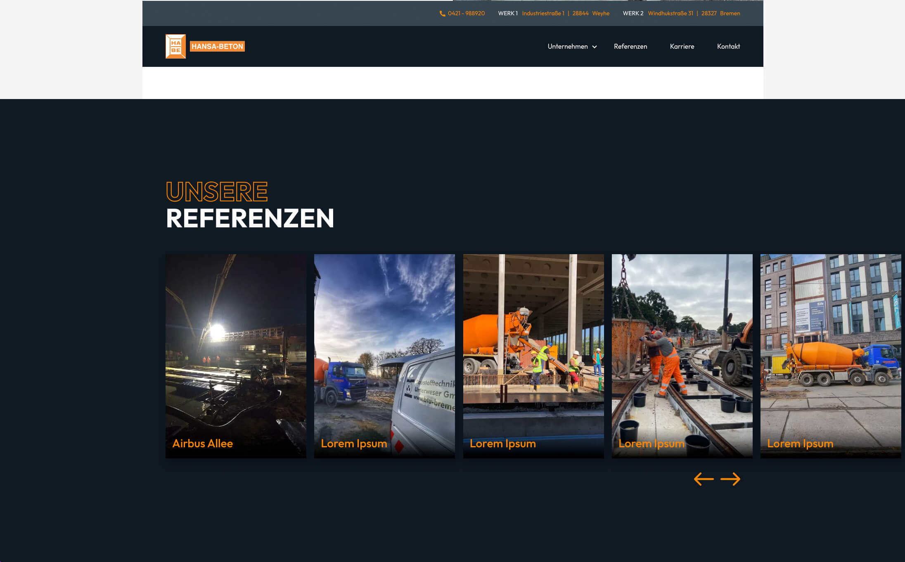

Der Relaunch der Webseite von Hansa Beton war ein Projekt, in dem ich
die gesamte Umsetzung der Webseite übernommen habe. Von der
Konzeption, über das Design bis hin zur Umsetzung.
Hansa Beton hat eine breite Auswahl an Bildmaterial, welches ich in
dem neuen Design in den Fokus gerückt habe.
Dieses Projekt befindet sich noch in der Umsetzung und kann noch nicht besichtigt werden.
Während die bisherige Webseite von Hansa Beton in einem guten technischen Zustand war, war das Design veraltet und nicht mehr zeitgemäß.
Um das Design aufzufrischen, habe ich mich an der bestehenden CI orientiert und diese weiterentwickelt. Der sehr gesättigte Blau-Ton wurde durch ein dunkles Blau ersetzt, welches sich besser für die Darstellung von Bildern eignet. Die Schriftart wurde durch eine modernere ersetzt und die Typografie wurde vereinheitlicht.
Die Webseite von Hansa Beton ist sehr Bildlastig. Um die Bilder in den Fokus zu rücken, habe ich mich für ein sehr minimalistisches Design entschieden. Die Bilder werden in einem großen Format dargestellt und die Texte sind resativ kurz gehalten.